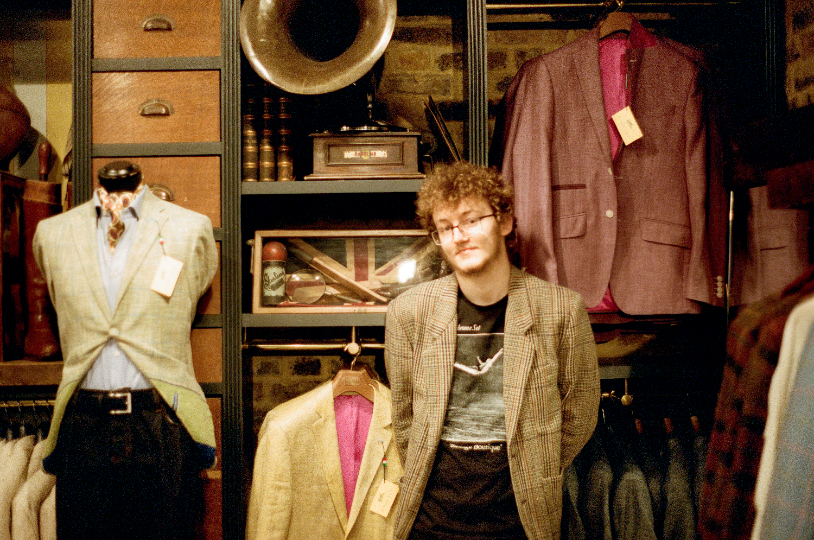

biography
web
photography
sound
contact

Arron Ware is a multi-media artist from the North of England.
He works primarily with Sound Design, Photography alongside Web Design.
Arron is also well-versed with various Photo & Video Editing software and graphic design techniques.